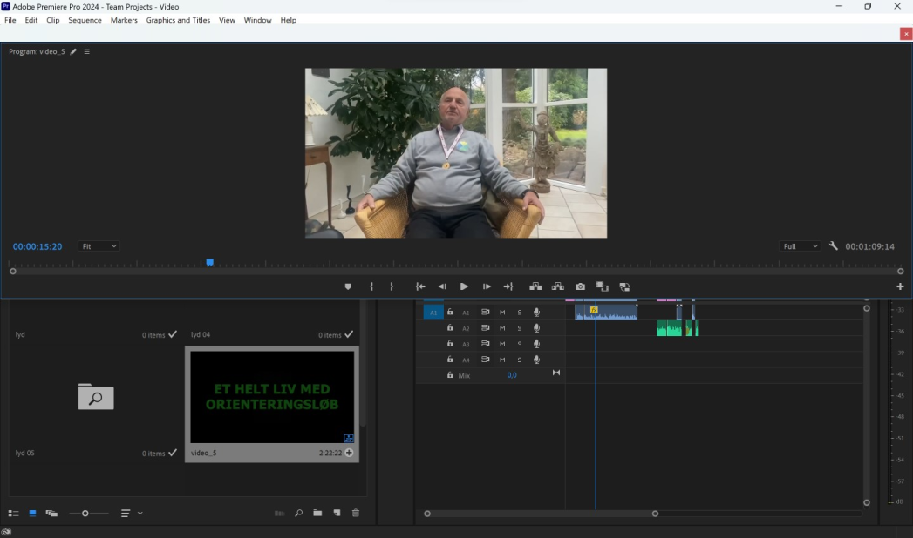

Tema 5: Grundlæggende indhold

Tema 5 fokuserer grundlæggende på koncepter og teknikker inden for digitalt indhold, samt principper inden for grafisk design og tekstredigering. Målet er at forbedre de studerendes evne til at skabe engagerende indhold på forskellige platforme. Temaet introducerer de studerende til videoproduktion, herunder præproduktion, optagelse og postproduktion. Jeg har selv arbejdet med smartphonekamera og redigering i Premiere Pro og Audition, hvilket har været nogle afgørende værktøjer for både selvproduktion af video- og fotoproduktioner. Derudover har jeg fået indsigt i grundlæggende faglige begreber inden for video- og fotoproduktion, som jeg har kombineret med mine færdigheder fra tidligere forløb til at skabe en hjemmeside til en udvalgt virksomhed.
Link til webpsite for tema 3- 
Ved begyndelsen af dette tema blev jeg bedt om at udvælge en person i vores omgangskreds med en særlig passion inden for et givet felt. Jeg valgte Jørn Wigh, en tidligere danmarksmester i orienteringsløb, der har dyrket sporten i over 50 år. Jeg gennemførte derefter et videointerview med ham, hvor jeg selv fungerede som kameramand og interviewede ham med fokus på hans passion. Efterfølgende klippede jeg de forskellige sekvenser sammen, for at skabe en sammenhængende video ved hjælp af Adobe's Premiere Pro-program. Med denne løsning fokuserede jeg videoen på interviewet, som præsenterede hans lidenskab for orienteringsløb. Under klipningen anvendte jeg blandt andet filmteknikken ”B-Roll”, hvor jeg indsatte optagelser fra interviewet, der understøttede en bestemt pointe, løbende, som supplement til den videre fortælling. Man kan forklare det ved, at jeg supplerede hovedindholdet – interviewet – med understøttende sekvenser. Jeg brugte som udgangspunkt billedbeskæringen halvnær under klipningen af den samlede video, men anvendte også nærbilleder i klipningen af selve interviewet.
-
Jeg startede med at teste hjemmesiden for dens udfordringer ved at lave en BERT-test, for at danne et indblik gennem viden fra et bredt publikum. Samtidig gennemførte jeg en 5-sekunders test, for at indhente indtryk fra en tilfældigt udvalgt person, der kunne repræsentere virksomhedens målgruppe ud fra spørgsmål om hjemmesiden, som jeg have udarbejdet. Afslutningsvis gennemførte jeg en heuristisk test, hvor jeg gav en tilfældigt udvalgt person mulighed for selv at udforske hjemmesiden uden min indblanding. Denne test gav mig mulighed for at få indblik i potentielle brugeres første indtryk og interaktion med hjemmesiden. Fælles for disse tests var, at de alle gav udtryk for, at hjemmesiden var uorganiseret, mangelfuld og manglede et formål, førend hjemmesiden kom i mål.
-
Efter at have analyseret brugerprofilen gennem tests, og efter indsamling af indtryk fra personer, der besøgte hjemmesiden, analyserede jeg virksomhedens forretningskoncept. Først interviewede jeg ejeren af bageriet, Iman Rasmussen, for at forstå hendes opfattelse af bageriets unikke salgsargument (USP). Jeg udvidede analysen ved også at interviewe kunder, der handlede i bageriet, for at danne mig et holistisk billede af bageriet som afsender, og for at forstå det image, bageriet havde. Derudover udførte jeg en målgruppeanalyse, for at identificere og forstå bageriets målgruppe.

I dette tema fokuserede jeg på fotostil- og klippeteori, herunder teknikker som beskæring og Colorgrading. Inden for teorien om beskæring eksperimenterede jeg med teknikker som Centrering, zoom ind/ud og reglen om tredjedele, for at skabe harmoniske og symbiotiske billeder, der appellerer til brugeren. Inden for Color grading anvendte jeg lysstyrker (Brightness), til at lysne billeder, der var blevet for mørke, og mætning (Saturation), til at justere farverne i baggrunden, særligt når de ikke skulle være i fokus.